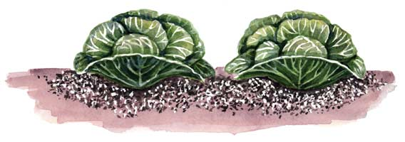

If you garden in Canada or the northern half of the United States, you probably have another spring pest of cabbage and broccoli to contend with - the cabbage maggot.
This fly lays its eggs on the soil near young transplants; when the larvae hatch, they crawl down into the soil and feed on the transplants’ roots, weakening and even killing the plants. The aboveground symptom is wilting, which may appear to be caused by lack of water.
Arthur Dear, a reader from Thorsby, Alberta, has developed an innovative technique to prevent this damage. Basically, he sets seedlings into the ground deeply, at a 45-degree angle, so that just the leaves are above ground. Then he steps on the plant with his full weight, rolling his foot from just before the roots over the buried stem and across the partially protruding leaves. Stepping on the transplants compresses the soil around the stem, making it impossible for the cabbage maggots to crawl down along the stem to the roots.
Here are the full details of Mr. Dear’s innovative technique.
Here's a growing tip for cole crops you may not have tried. For the last several years I have been using soil compression as the sole method of root-maggot control. It is a combination of transplant characteristics, planting technique, and significant soil compression around the stem and root.
I grow my transplants at high density (cabbage and Brussels sprouts 96 per 11-inch by 22-inch plug flats, and broccoli, baby kale, kohlrabi and some Asian greens in 96 clumps of three or four plants per 11-inch by 22-inch flats). They are finished off hard at about 3 inches with about three to four small leaves and relatively tough elongated stems. Some practice may be required since they are close to, but definitely not at, wire stem stage. Do not over feed. Frequent watering will be required. The plants should be skirting along just above phosphorus deficiency where the leaves will start turning purple.
My soil is a heavier silt loam with some clay. It will crust thinly and crack in drought but doesn't really clod up as long as I keep up organic levels. Soil worked thinly (plus or minus 3 inches of loose soil the fall before) is given supplementary nitrogen, as in any seed meal, and worked shallow again.
Hardened off transplants are then grasped between the thumb and first two fingers and pushed into the soil at about a 45 degree angle, basically as far as it will go. No stem has to show but the rosette of leaves should protrude slightly. Then step on the plant, full weight, rolling your foot’s weight from just before the root, over the buried root and stem, and across the partially protruding leaves. The tough transplants will not break and the leaves will survive. Soil moisture level cannot be bone dry or too soggy to work. Fluffy, moist soil works just fine. Within a couple days the stems will elongate and the leaves grow out and shed the dirt.
In summary, stand over the row with one foot on the row center and the other 12 inches or so offside. Lean over and push a plug down and towards you at a 45 degree angle in one swift plunge (yes, yes practice, but that’s life - dibbles are a waste of time) so that the leaves stick away from you, then step forward onto the plant compressing the soil. Lean forward and repeat the process. With moderate soil moisture and air temperatures, the plants can wait a couple days for water. This is because stepping on the soil compresses it and restores the soil moisture column and provides good soil-root contact. One planter can do a couple thousand a day without too much stress.
By the by, I use this same basic growing method, but using firm finger compression instread of stepping on them, for beets, lettuce, Swiss chard, first crop green beans, corn, green onions, early dill, plus flowers for my wife (all in clumps) and a few things in single plant plugs of varying sizes. Be sure to provide enough space between clumps in the row to give the required average individual plant spacing.
I have not (casually at least) noticed any difference in crop maturity times. Being consistently first at market draws the customers and brings higher prices (and drives my competitor’s nuts). Larger clumps of 10 to 12 work well for green onions but for most other crops give diminishing returns. If you plant just before a modest rain you will not have to water them in.
How it works: Adult maggot flies lay eggs on the soil surface near the stem. When the larvae hatch out they must crawl down the stem to the root. After the first watering or rain, the footprint with the plant in its center will develop a hard, permanent crust, which will prevent root maggots from crawling down the stem to the root. The barrier stands up well for several weeks until plant growth and wind provide a small crack near the stem. By then, most cole crops are able to tolerate the few maggots that burrow through the still compressed soil below the crust.
One little wrinkle here - do not cultivate the crust because you will break up the barrier. If you need to weed, do so by burying the weeds or hand pulling. It seems that every couple of years somebody around here, myself included, forgets this in the rush of spring work and we relearn a lesson on some row we rushed through.
Effectiveness: Side by side, 200-foot rows with about 130 early cabbages planted prior to the main insect hatch will suffer 50 to 90 percent losses in unmanaged rows and rarely more than 2 or 3 percent loss in the managed row. Frank, this is not much different than when I used chemical drenches in the past. We live in canola country and the maggot flies are everywhere. Loss rates in the other cole crops are essentially zero, except for cauliflower. This system does not work for cauliflower. Most of the time, most of the cauliflower plants will bolt. It does not work on sandy soils because they will not compress well.
We are a small market garden. At one time we were up to five acres, but now are in semi-retirement. I am currently growing only about half that acreage and selling exclusively at the Drayton Valley farmers market, not too far from us. You would not believe the lineups.
|
 ROBIN WIMBISCUS Cabbage plants are susceptible to garden pests such as cabbageworms and maggots. |
|
|